Résumé complet en français — chapitres 1 à 7. Les slides marquées d'un ⚡! sont celles que le prof a signalées comme « à savoir absolument ».
Sous chaque slide allemande, un panneau « 📄 Traduction FR de la slide » (ouvert par défaut) donne la traduction complète + l'explication des graphiques. Tu peux le replier d'un clic.
Bewegung = mouvementWeg/Ort = chemin/positionZeit = tempsGeschwindigkeit = vitesseBeschleunigung = accélérationKraft = forceMasse = masseTrägheit = inertieGewichtskraft = poidsReibung = frottementLuftwiderstand = résistance de l'airArbeit = travailLeistung = puissanceEnergie = énergieImpuls = impulsion (quantité de mvt)Kraftstoss = impulsion de forceStoss = chocDrehmoment = moment de forceTrägheitsmoment = moment d'inertieDrehimpuls = moment cinétiqueWinkelgeschwindigkeit = vitesse angulairegleichförmig = uniformegleichmässig beschleunigt = uniformément accéléréschiefer Wurf = tir obliquefreier Fall = chute libreErhaltungssatz = loi de conservationBezugssystem = référentielHebel(arm) = (bras de) levierGelenk = articulationSprunghöhe = hauteur de sautFlugzeit = temps de volBodenreaktionskraft = force de réaction du sol
L'objectif de ce chapitre : poser le décor. Comprendre ce qu'étudie la biomécanique et avec quels outils, avant d'entrer dans la physique.
Mécanique (branche de la physique) : étude du mouvement et de la déformation des corps, ainsi que des forces qui agissent dessus.
Biomécanique (du grec bios = la vie) : application des principes mécaniques pour décrire, analyser et évaluer les systèmes biologiques et les forces qui y agissent.
Biomécanique du sport : science qui décrit et explique les forces agissant sur le corps humain et les mouvements qui en résultent, à l'aide des lois mécaniques.
C'est une science très interdisciplinaire : elle emprunte à la biologie, la physique, l'anatomie, la physiologie, la chimie, les maths et l'informatique. Un mouvement humain naît d'un enchaînement complexe : planification dans le système nerveux central → commande neuromusculaire → contraction musculaire → contrôle sensorimoteur.
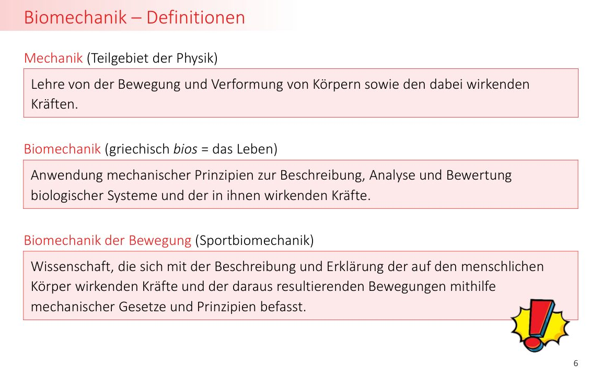
⚡ SLIDE ! La slide des 3 définitions empilées ci-dessus. C'est le vocabulaire fondateur : mécanique → biomécanique → biomécanique du sport, du plus général au plus appliqué au corps humain. Si une question de définition tombe, elle vient d'ici.
Mécanique (sous-domaine de la physique) : étude du mouvement et de la déformation des corps ainsi que des forces qui y agissent.
Biomécanique (du grec bios = la vie) : application des principes mécaniques pour décrire, analyser et évaluer les systèmes biologiques et les forces qui y agissent.
Biomécanique du mouvement (biomécanique du sport) : science qui décrit et explique les forces agissant sur le corps humain et les mouvements qui en résultent, à l'aide des lois et principes mécaniques.
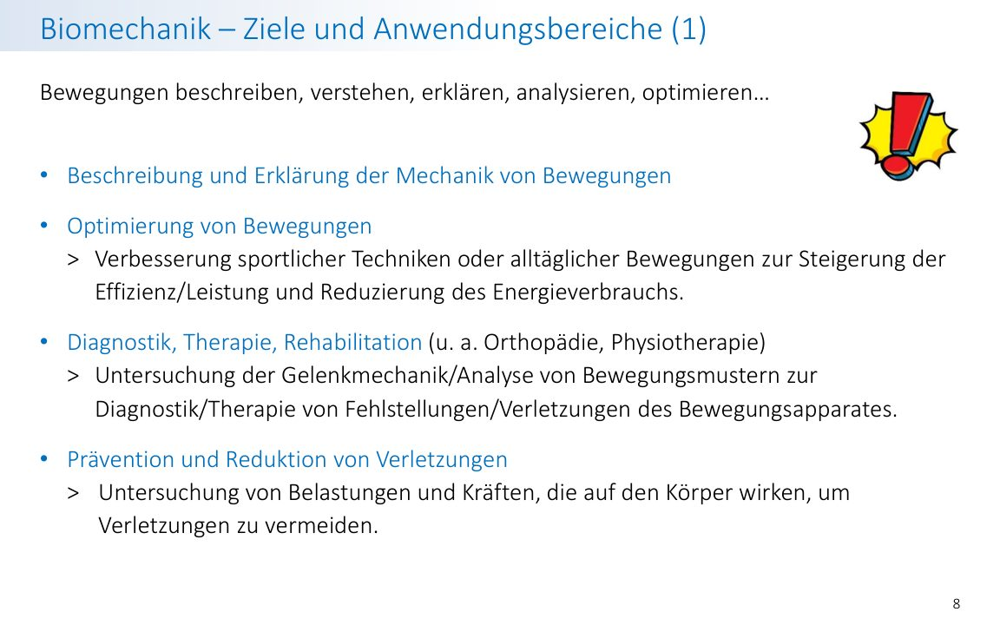
⚡ SLIDE ! À quoi sert la biomécanique : décrire/expliquer la mécanique des mouvements, optimiser les techniques sportives (efficacité, moins d'énergie), diagnostic / thérapie / réadaptation (orthopédie, physio) et prévention des blessures (étude des charges et forces sur le corps).
Décrire, comprendre, expliquer, analyser, optimiser les mouvements :
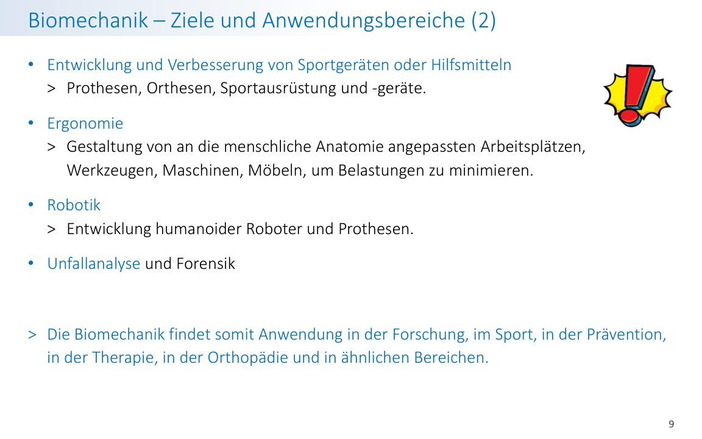
⚡ SLIDE ! Suite des applications : développement de matériel (prothèses, orthèses, équipement), ergonomie (postes de travail adaptés à l'anatomie), robotique (robots humanoïdes) et analyse d'accidents / médecine légale. Idée à retenir : la biomécanique est partout, de la recherche à la prévention.
La biomécanique trouve donc des applications dans la recherche, le sport, la prévention, la thérapie, l'orthopédie et domaines similaires.
Le socle théorique de tout le cours. C'est ici qu'apparaît la distinction cinématique / dynamique et les formes de mouvement — deux notions qui reviennent dans chaque chapitre suivant.
La mécanique classique a été fondée au 17e siècle par Isaac Newton (Principia, ~1700, les 3 lois du mouvement). C'est la plus ancienne discipline de la physique.
Mouvement : toute modification de la position et/ou de l'orientation d'un corps. Toute action observable (mouvement ou déformation) est causée par une force.
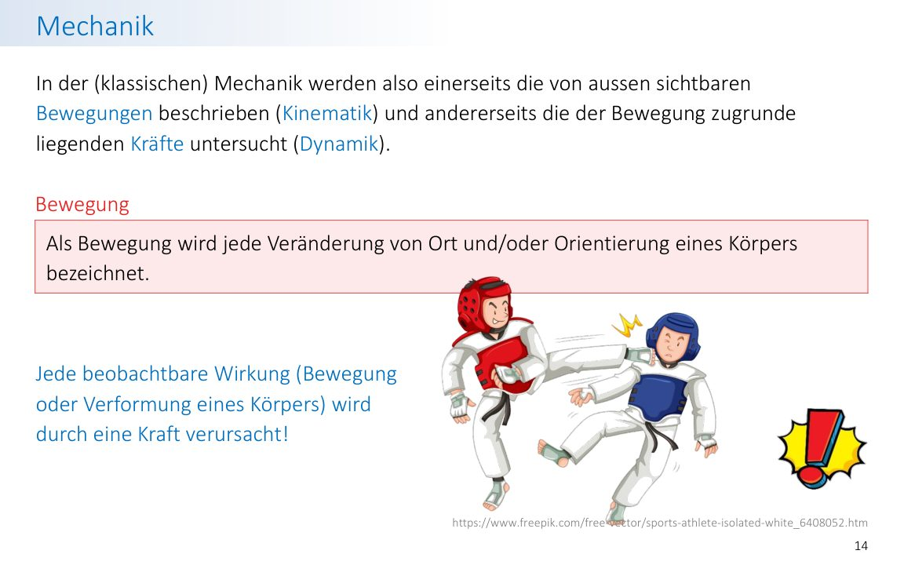
⚡ SLIDE ! Le message encadré : « Toute action observable (mouvement ou déformation d'un corps) est causée par une force ! » C'est le fil rouge de tout le cours. La mécanique se divise alors en deux : décrire le mouvement visible (cinématique) et étudier les forces sous-jacentes (dynamique).
Mouvement : on appelle mouvement toute modification de la position et/ou de l'orientation d'un corps.
En mécanique (classique), on décrit d'une part les mouvements visibles de l'extérieur (cinématique), et d'autre part on étudie les forces sous-jacentes au mouvement (dynamique).
Encadré clé : « Tout effet observable (mouvement ou déformation d'un corps) est causé par une force ! »
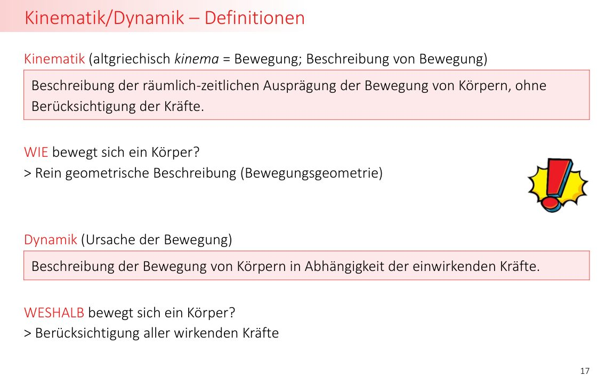
⚡ SLIDE ! La slide officielle de la distinction. Cinématique = COMMENT (géométrie du mouvement, sans les forces). Dynamique = POURQUOI (en tenant compte de toutes les forces). À connaître par cœur, c'est le genre de question « facile » qui tombe à l'examen.
Cinématique (du grec ancien kinema = mouvement) : description de l'expression spatio-temporelle du mouvement des corps, sans tenir compte des forces. → COMMENT un corps se déplace-t-il ? → Description purement géométrique du mouvement.
Dynamique (cause du mouvement) : description du mouvement des corps en fonction des forces qui agissent. → POURQUOI un corps se déplace-t-il ? → On tient compte de toutes les forces.
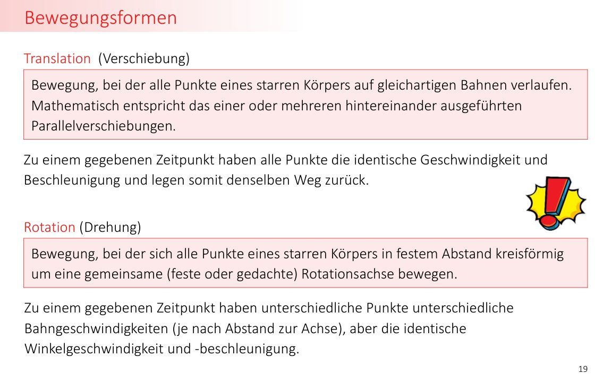
⚡ SLIDE ! Les deux formes de mouvement :
À retenir : tout mouvement réel d'un corps rigide = combinaison translation + rotation (mouvement général). Les mouvements humains ne sont presque jamais purs.
Translation (déplacement) : mouvement où tous les points d'un corps rigide suivent des trajectoires identiques (mathématiquement = une ou plusieurs translations parallèles). À un instant donné, tous les points ont la même vitesse et la même accélération et parcourent donc le même chemin.
Rotation (tour) : mouvement où tous les points d'un corps rigide se déplacent en cercle, à distance fixe, autour d'un axe de rotation commun (fixe ou imaginaire). À un instant donné, des points différents ont des vitesses de trajectoire différentes (selon la distance à l'axe), mais la même vitesse et accélération angulaires.
On décrit le mouvement sans se soucier des forces : position, vitesse, accélération, et comment passer de l'une à l'autre. Le chapitre le plus « graphique » du cours — sache lire les diagrammes.
Trajectoire : l'ensemble des positions occupées par un point pendant le mouvement (la courbe le long de laquelle le corps se déplace). Elle peut être rectiligne ou curviligne.
Toutes les grandeurs biomécaniques dérivent de 3 grandeurs de base : longueur, masse, temps.
Bon à savoir : la vitesse dépend du référentiel (une voiture à 50 km/h… par rapport à la Terre ; la Terre file à 107 000 km/h autour du Soleil). L'accélération, elle, est invariante — sauf si le référentiel est lui-même accéléré (notion d'inertie / référentiel inertiel).
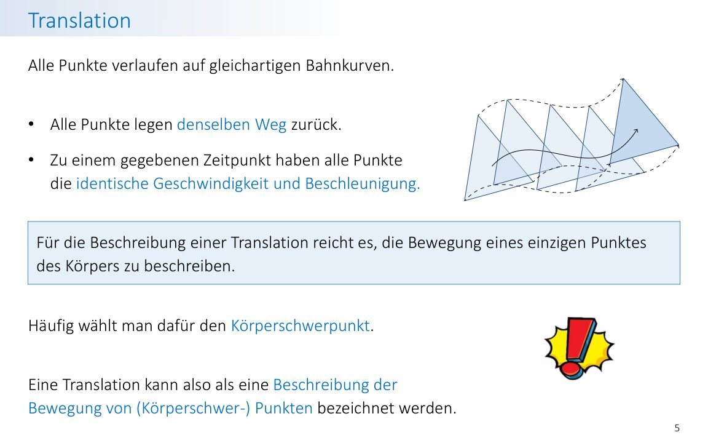
⚡ SLIDE ! En translation, tous les points suivent des trajectoires identiques, parcourent le même chemin, ont à chaque instant la même vitesse et la même accélération. Conséquence pratique : pour décrire une translation, il suffit de décrire un seul point (en général le centre de gravité). C'est ce qui simplifie énormément les calculs.
Tous les points suivent des trajectoires de même nature.
On choisit souvent pour cela le centre de gravité du corps. Une translation peut donc être vue comme la description du mouvement de points (centres de gravité). Pour décrire une translation, il suffit de décrire le mouvement d'un seul point du corps.
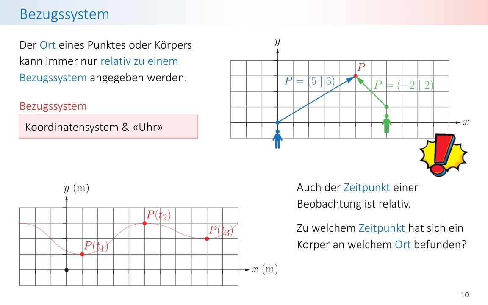
⚡ SLIDE ! La position d'un corps ne se donne que relativement à un référentiel (système de coordonnées + « horloge »). Même l'instant d'observation est relatif. Idée importante du chapitre : un référentiel inertiel est un référentiel au repos ou en mouvement à vitesse constante — c'est là que les lois de Newton sont les plus simples (principe de relativité de Galilée).
La position d'un point ou d'un corps ne peut être indiquée que relativement à un référentiel. L'instant d'une observation est lui aussi relatif : à quel moment un corps s'est-il trouvé à quel endroit ?
Référentiel = système de coordonnées + « horloge ».
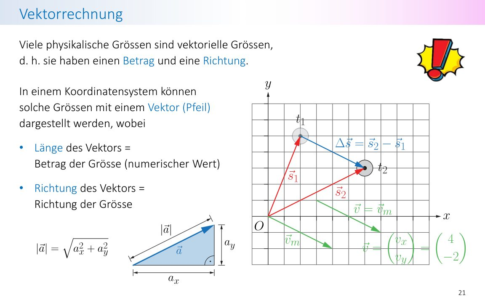
⚡ SLIDE ! Beaucoup de grandeurs sont des vecteurs (flèche) : la longueur de la flèche = la valeur, la direction de la flèche = la direction de la grandeur. À retenir visuellement, pas par formule.
Beaucoup de grandeurs physiques sont des grandeurs vectorielles, c.-à-d. qu'elles ont une valeur (norme) et une direction.
Dans un système de coordonnées, ces grandeurs se représentent par un vecteur (flèche) :
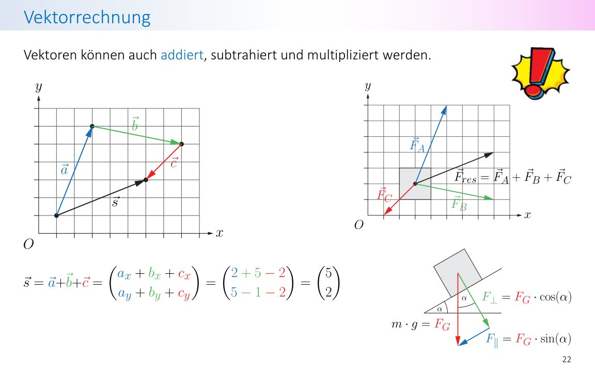
⚡ SLIDE ! Les vecteurs s'additionnent, se soustraient, se décomposent (méthode du parallélogramme / bout-à-bout). C'est l'outil qui sert partout ensuite : forces résultantes, tir oblique, collisions… Comprendre le principe géométrique suffit.
Les vecteurs peuvent aussi être additionnés, soustraits et multipliés.
Ce que montrent les 3 schémas :
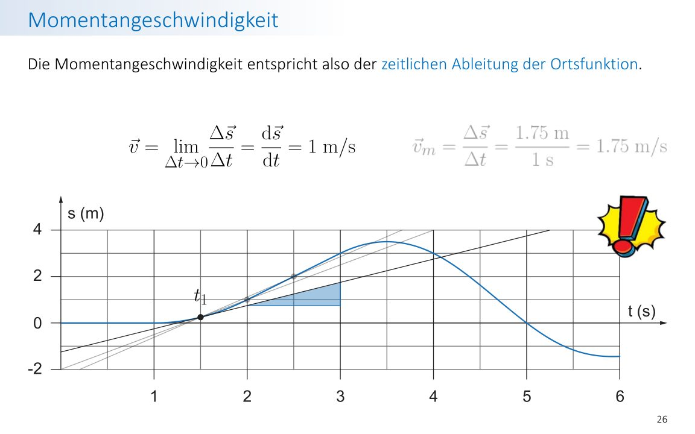
⚡ SLIDE ! Graphique position-temps. La vitesse instantanée = pente de la tangente à la courbe de position. Sur le dessin, la sécante (entre deux points) bascule vers la tangente quand l'intervalle Δt tend vers zéro. Message : dériver la position → vitesse. (Aucun calcul demandé, mais sache lire « pente raide = rapide ».)
La vitesse instantanée correspond donc à la dérivée temporelle de la fonction position (= pente de la tangente à la courbe position-temps à cet instant).
Le graphique illustre comment la sécante (entre deux instants) se rapproche de la tangente quand l'intervalle de temps tend vers zéro.
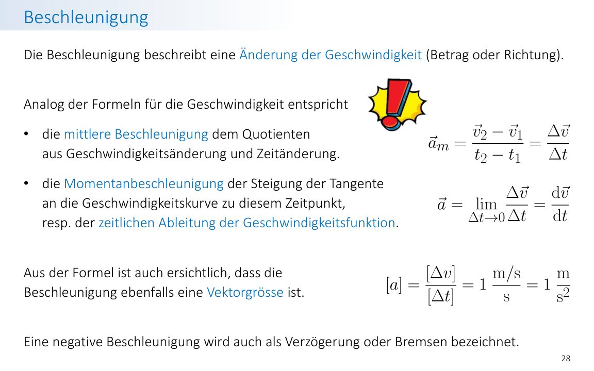
⚡ SLIDE ! L'accélération = pente de la tangente à la courbe vitesse-temps (dérivée de la vitesse), et c'est un vecteur. Idée intuitive de la slide : une vitesse constante (avion en croisière) « ne se sent pas » ; en revanche notre corps (oreille interne / appareil vestibulaire) perçoit toute accélération, c'est-à-dire tout changement de vitesse.
L'accélération décrit un changement de la vitesse (en valeur ou en direction). Comme pour la vitesse :
L'accélération est aussi une grandeur vectorielle. Une accélération négative s'appelle décélération ou freinage.
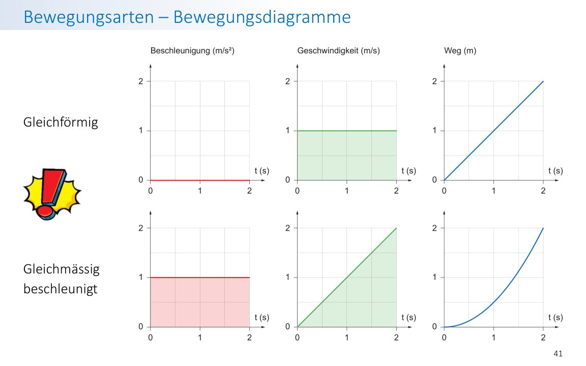
⚡ SLIDE ! La slide la plus importante du chapitre (et un classique d'examen). Elle montre le lien entre les 3 diagrammes accélération → vitesse → position pour deux types de mouvement :
La règle à retenir absolument : l'aire sous la courbe d'accélération donne la vitesse ; l'aire sous la courbe de vitesse donne le déplacement. Et inversement la pente d'une courbe donne la grandeur du dessus. C'est tout l'esprit du chapitre en une image.
Traduction des titres : Beschleunigung (m/s²) = accélération · Geschwindigkeit (m/s) = vitesse · Weg (m) = chemin/position · t (s) = temps. Lignes : Gleichförmig = uniforme · Gleichmässig beschleunigt = uniformément accéléré.
Le graphique compare les deux types de mouvement à travers les 3 diagrammes :
Lien entre les courbes : l'aire colorée sous la courbe d'accélération donne la vitesse ; l'aire sous la courbe de vitesse donne le chemin parcouru. Inversement, la pente d'une courbe donne la grandeur du diagramme à sa gauche.
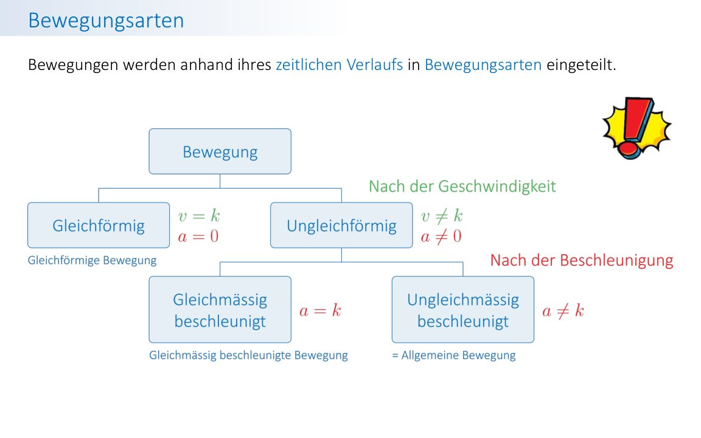
⚡ SLIDE ! Mouvement uniforme (rectiligne) : vitesse constante (valeur ET direction) → le corps n'est pas accéléré. Conséquence (principe d'inertie) : aucune force extérieure résultante n'agit. Cas particulier : un corps au repos (vitesse = 0).
Les mouvements sont classés en types de mouvement selon leur évolution dans le temps.
Traduction du schéma en arbre :
(k = constante.) Donc 3 types à retenir : uniforme (v constante), uniformément accéléré (a constante), mouvement général (a variable).
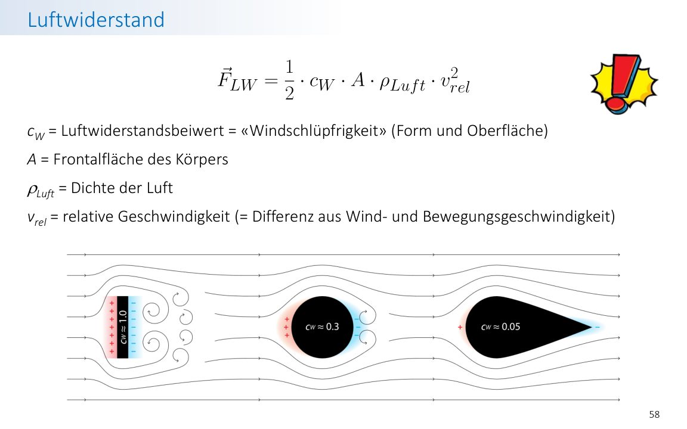
⚡ SLIDE ! Mouvement uniformément accéléré : accélération constante (valeur et direction). Mouvement général : accélération qui varie. Un corps est accéléré quand une ou plusieurs forces extérieures agissent, et l'accélération se fait dans la direction de la force résultante.
Légende des termes de la formule de la résistance de l'air :
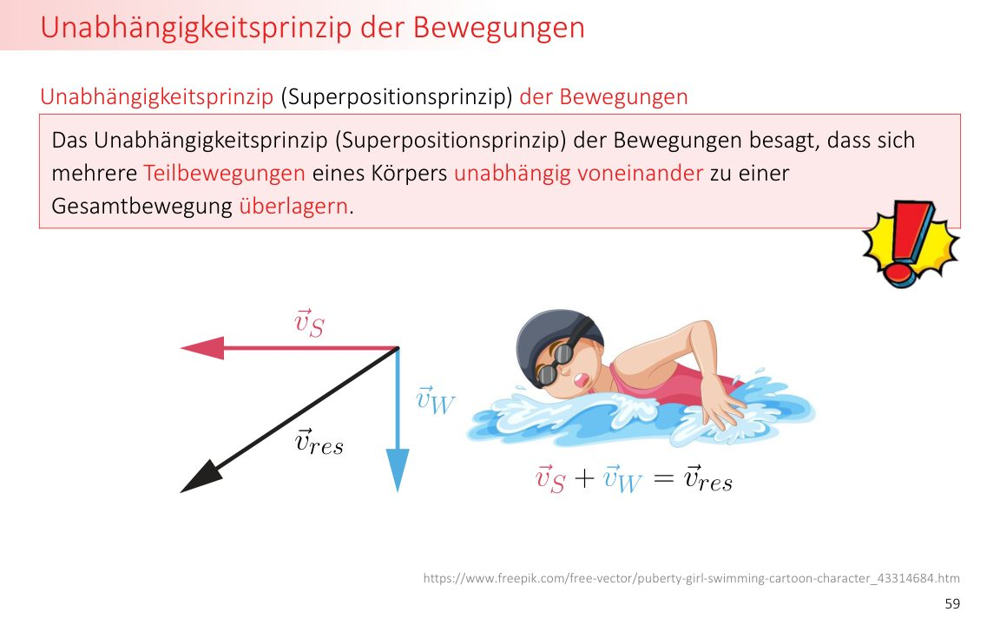
⚡ SLIDE ! Chute libre = mouvement où seule la pesanteur agit (résistance de l'air négligée). L'accélération est alors constante et indépendante de la masse, de la forme et du matériau → c'est un mouvement uniformément accéléré. La pesanteur g dépend du lieu (Fribourg ≈ 9,806 m/s²). À retenir : en chute libre, une plume et une bille tomberaient pareil… s'il n'y avait pas l'air.
Le principe d'indépendance (superposition) énonce que plusieurs mouvements partiels d'un corps se superposent indépendamment les uns des autres pour former le mouvement total.
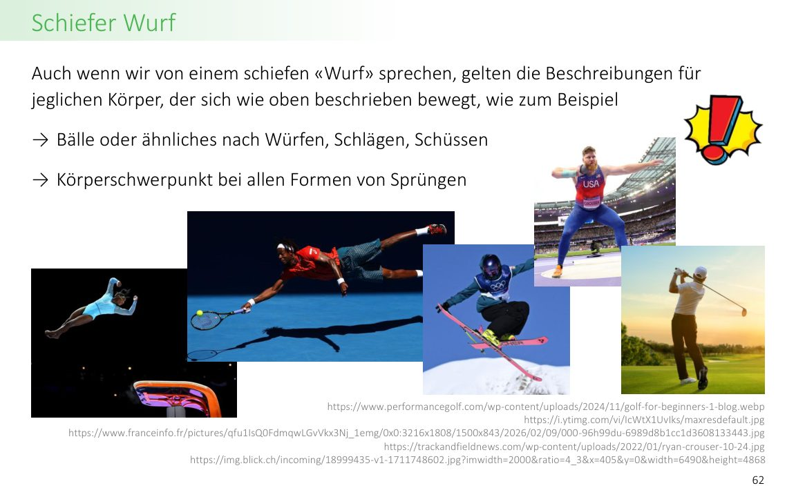
⚡ SLIDE ! Principe d'indépendance / superposition : plusieurs mouvements partiels d'un corps se superposent sans s'influencer. Chaque composante (horizontale, verticale…) évolue indépendamment. C'est ce qui permet de décomposer les mouvements compliqués en mouvements simples (addition de vecteurs).
Même si l'on parle d'un « tir » oblique, les descriptions valent pour tout corps qui se déplace ainsi, par exemple :
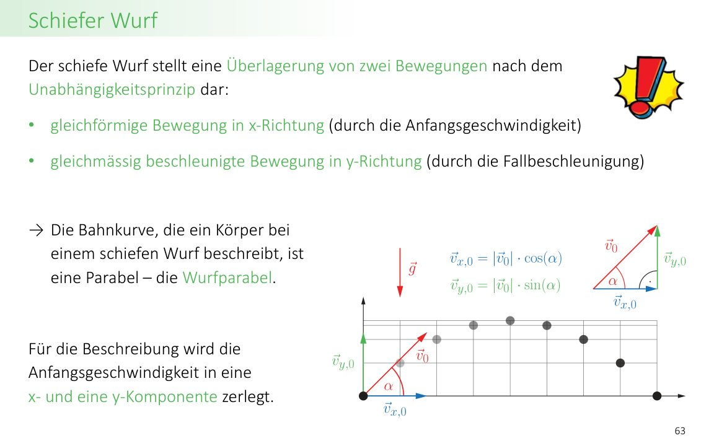
⚡ SLIDE ! Application directe du principe d'indépendance. Le tir oblique est la superposition de deux mouvements :
Résultat : la trajectoire est une parabole (la « parabole de tir »). Ça vaut pour tout projectile : balles après un lancer/tir, et le centre de gravité dans tous les sauts. La résistance de l'air est négligée ici.
Le tir oblique représente une superposition de deux mouvements selon le principe d'indépendance :
La trajectoire décrite est une parabole (la parabole de tir). Pour la décrire, on décompose la vitesse initiale en une composante x et une composante y.
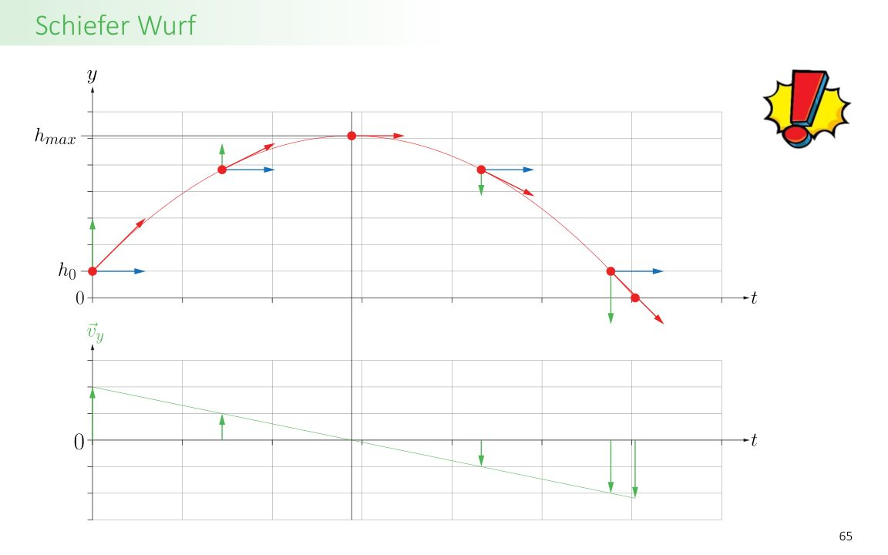
⚡ SLIDE ! La même parabole décomposée en composantes vitesse (vx constante, vy qui diminue puis s'inverse). À comprendre : au sommet, la vitesse verticale est nulle mais la vitesse horizontale reste. Lien examen : l'angle d'envol optimal (lancer du poids, disque, saut en longueur) résulte du compromis entre vitesse et hauteur de lâcher — il n'est pas toujours 45° et il est spécifique à l'athlète.
Slide-graphique : la parabole de tir avec les vecteurs vitesse dessinés à chaque instant de la trajectoire.
Vocabulaire : Wurf = lancer/tir · Wurfparabel = parabole de tir · Abwurfwinkel = angle d'envol.
Ici on répond à POURQUOI ça bouge : les forces. C'est le plus gros chapitre. Cœur du programme : les 3 lois de Newton, les forces (poids, frottement, élastique), puis impulsion, chocs, travail, énergie et puissance.
Statique : forces dans des systèmes au repos, forces à l'équilibre (a = 0). Cinétique : forces dans des systèmes en mouvement, force résultante ≠ 0 (a ≠ 0).
Une force sert à décrire et prédire les effets sur un corps. On ne l'observe jamais directement, seulement par ses effets. En mécanique, 3 effets possibles : changement de mouvement (accélération), changement de forme (déformation), changement de tension mécanique. La force est une grandeur vectorielle : valeur + direction + point d'application. Quand plusieurs forces agissent, seule la force résultante (somme vectorielle) compte.
⚡ SLIDE ! Les forces servent à décrire et prédire les effets sur les corps. Elles ne s'observent pas directement, uniquement via leurs effets. Encadré clé : toute action observable (mouvement ou déformation) est causée par une force physique.
« Pour maîtriser le drapeau humain (human flag), il te faut énormément de force… » → Mais qu'est-ce que la force ?
Tout effet observable (mouvement ou déformation d'un corps) est causé par une force physique.
⚡ SLIDE ! Les 3 effets d'une force : changement de mouvement (accélération), changement de forme (déformation), changement de tension mécanique interne. Trois photos illustrent les trois cas.
En mécanique, on distingue trois effets des forces :
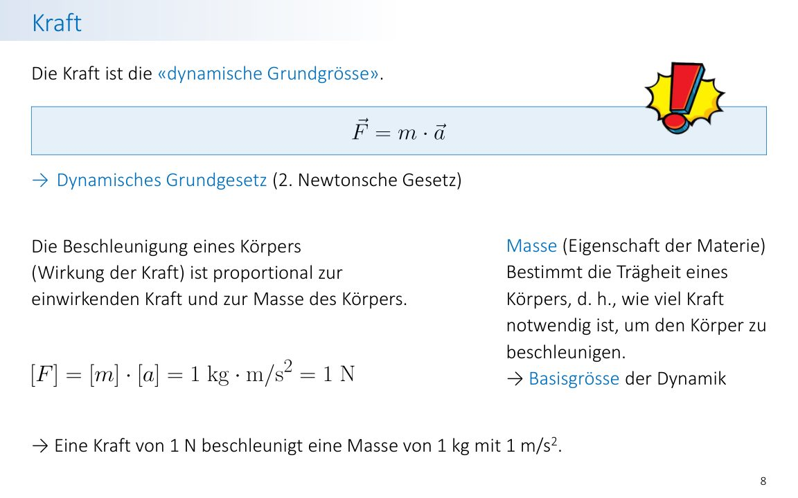
⚡ SLIDE ! La force est la « grandeur de base dynamique ». La masse détermine l'inertie d'un corps : quelle force il faut pour l'accélérer. Une force de 1 N accélère 1 kg de 1 m/s². (C'est déjà la 2e loi de Newton qui pointe.)
La force est la « grandeur de base de la dynamique ». → Principe fondamental de la dynamique (2e loi de Newton) : l'accélération d'un corps (effet de la force) est proportionnelle à la force appliquée et à la masse du corps. Une force de 1 N accélère une masse de 1 kg à 1 m/s².
Masse (propriété de la matière) : détermine l'inertie d'un corps, c.-à-d. la force nécessaire pour l'accélérer. → Grandeur de base de la dynamique.
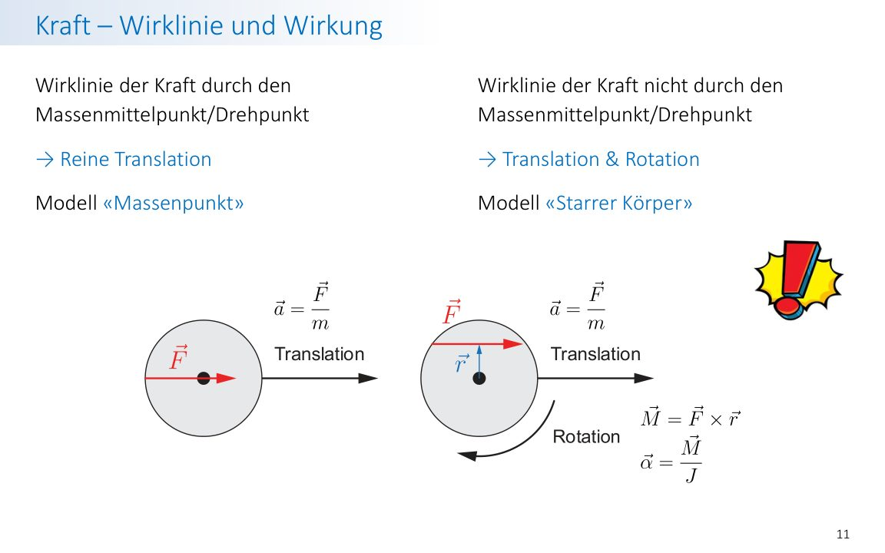
⚡ SLIDE ! Distinction très importante selon que la ligne d'action de la force passe ou non par le centre de masse :
C'est ce qui annonce le chapitre 6 : décaler la force = créer une rotation (un moment de force).
Les trois lois forment le fondement de la mécanique classique. Elles relient la cinématique à la dynamique, sont formulées pour les translations mais valent aussi pour les rotations. Même si ce n'était pas marqué « ! », c'est incontournable — et ici les trois slides le sont.
Un corps reste au repos ou en mouvement rectiligne uniforme tant qu'aucune force résultante ne le force à changer d'état. → « Tant qu'aucune force n'agit, le corps garde son état de mouvement. »
L'accélération d'un corps est proportionnelle à la force et se fait le long de sa ligne d'action ; le facteur de proportionnalité est la masse (F = m · a). Plus de masse → plus de force pour la même accélération. C'est cette loi qui relie dynamique et cinématique.
Si un corps A exerce une force sur B, alors B exerce sur A une force égale, opposée, sur la même ligne d'action. Les forces vont toujours par paires. Vu moderne : c'est le principe de conservation de la quantité de mouvement (impulsion).
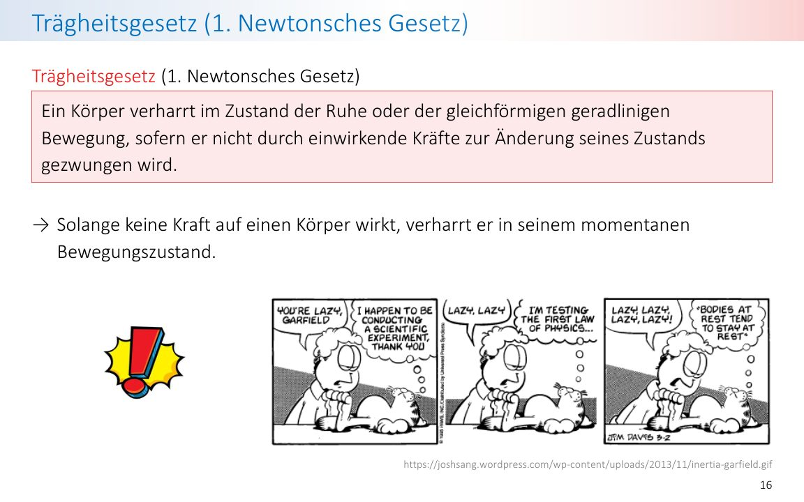
⚡ SLIDE ! Loi d'inertie : sans force, le corps conserve son état (repos ou mouvement rectiligne uniforme). Le chat de Garfield qui ne veut pas bouger = bonne image mnémotechnique.
Tant qu'aucune force n'agit sur un corps, il conserve son état de mouvement actuel.
Énoncé : un corps reste au repos ou en mouvement rectiligne uniforme tant qu'il n'est pas contraint de changer d'état par des forces qui agissent sur lui.
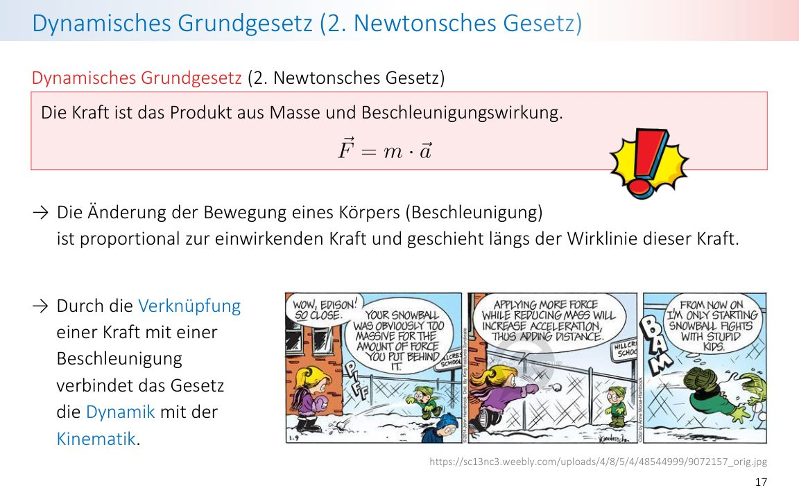
⚡ SLIDE ! F = m·a. La variation de mouvement (accélération) est proportionnelle à la force et se fait dans la direction de celle-ci. C'est le pont entre dynamique (force) et cinématique (accélération).
La force est le produit de la masse et de l'accélération (F = m·a).
→ Le changement de mouvement d'un corps (accélération) est proportionnel à la force appliquée et se fait le long de la ligne d'action de cette force.
→ En reliant une force à une accélération, cette loi connecte la dynamique et la cinématique.
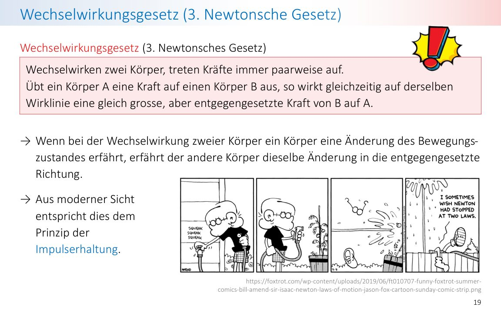
⚡ SLIDE ! Quand deux corps interagissent, les forces apparaissent par paires : A→B et B→A, égales et opposées. C'est l'origine de la conservation de l'impulsion. La bande dessinée Foxtrot illustre le « recul ».
→ Lors de l'interaction de deux corps, si l'un subit un changement de son état de mouvement, l'autre subit le même changement en sens opposé. Vu moderne : cela correspond au principe de conservation de l'impulsion.
Énoncé : quand deux corps interagissent, les forces apparaissent toujours par paires. Si A exerce une force sur B, B exerce simultanément sur A une force égale, sur la même ligne d'action, mais opposée.
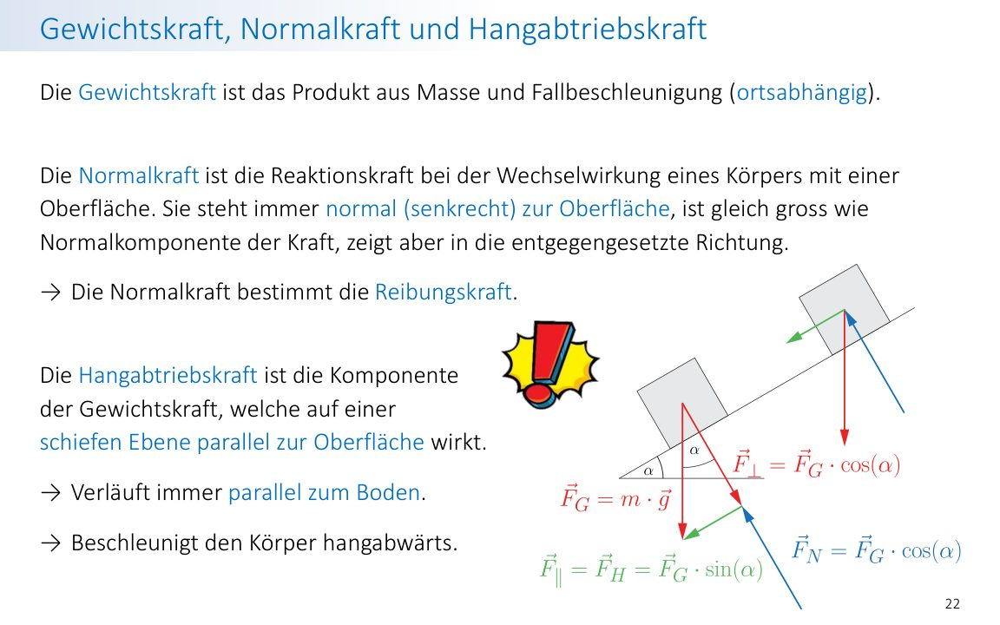
⚡ SLIDE ! Trois forces à distinguer sur un plan incliné :
Le poids est le produit de la masse et de l'accélération de pesanteur (dépend du lieu).
La force normale est la force de réaction lors de l'interaction d'un corps avec une surface. Elle est toujours perpendiculaire (normale) à la surface, de même grandeur que la composante normale de la force mais de sens opposé. → La force normale détermine la force de frottement.
La force de pente (Hangabtriebskraft) est la composante du poids qui agit parallèlement à la surface d'un plan incliné. → Accélère le corps vers le bas de la pente.
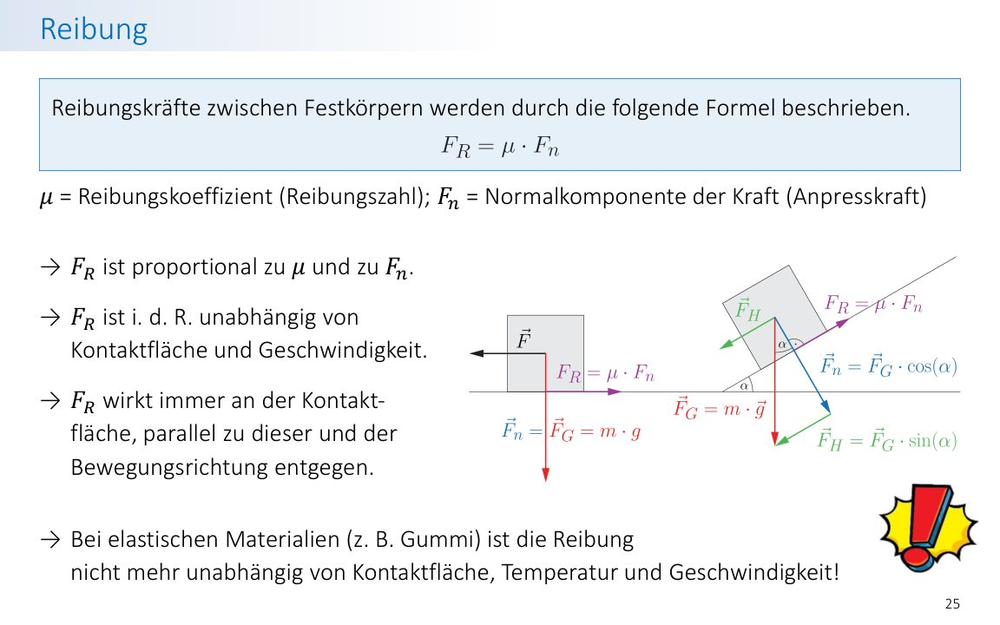
⚡ SLIDE ! Le frottement FR est proportionnel au coefficient μ et à la force normale Fn (FR = μ · Fn). Points à retenir : il est en général indépendant de la surface de contact et de la vitesse, agit parallèlement à la surface et contre le mouvement. Exception : matériaux élastiques (caoutchouc) où ça ne tient plus.
Les forces de frottement entre solides sont décrites par la formule FR = μ·Fn, où μ = coefficient de frottement et Fn = composante normale de la force (force de pression).
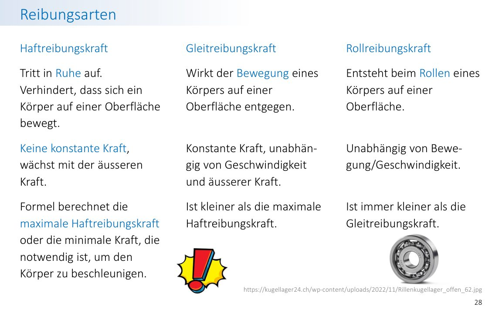
⚡ SLIDE ! Trois types, à classer dans le bon ordre : μadhérence > μglissement >> μroulement.
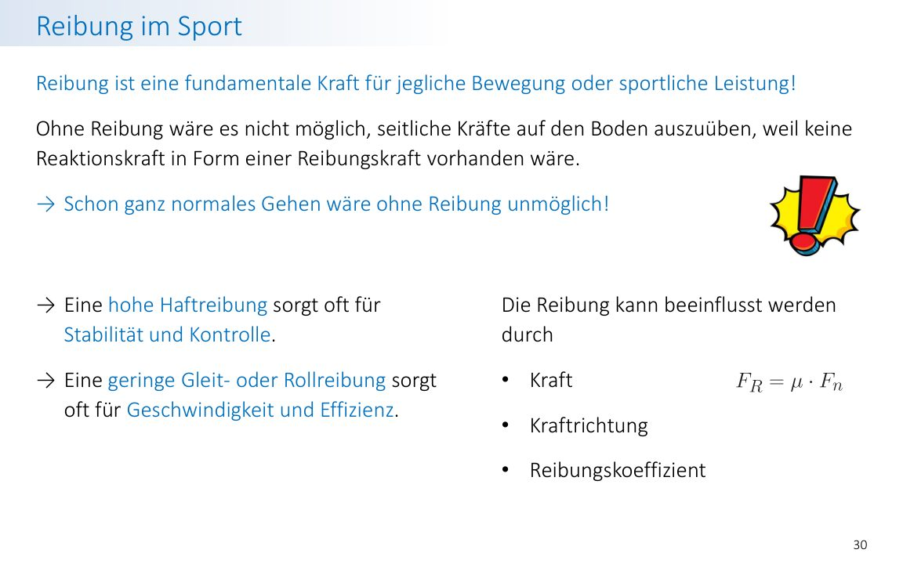
⚡ SLIDE ! Idée forte : sans frottement, aucun mouvement sportif (ni même la marche) n'est possible — pas de réaction du sol = pas de poussée latérale. On joue dessus en modulant : la force, la direction de la force, le coefficient μ. Haute adhérence → stabilité et contrôle ; faible glissement/roulement → vitesse et efficacité.
Le frottement est une force fondamentale pour tout mouvement ou performance sportive ! Sans frottement, impossible d'exercer des forces latérales sur le sol (pas de force de réaction sous forme de frottement). → Même la marche normale serait impossible sans frottement !
Le frottement peut être influencé par : la force, la direction de la force, le coefficient de frottement.
Impulsion p = masse × vitesse (vecteur). Toute force provoque une variation d'impulsion dans le temps.
Impulsion de force (Kraftstoss) = force × durée = variation d'impulsion. = aire sous la courbe force-temps.
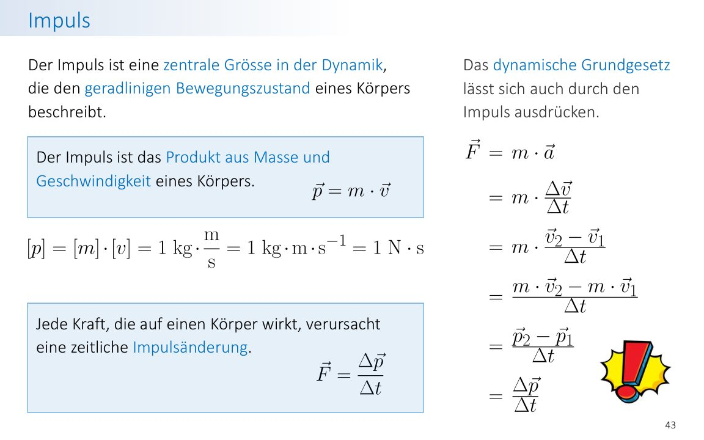
⚡ SLIDE ! L'impulsion p = m·v décrit l'état de mouvement rectiligne d'un corps. Le principe fondamental peut s'exprimer ainsi : toute force = variation d'impulsion dans le temps. Grandeur centrale pour tout ce qui suit (chocs).
L'impulsion est une grandeur centrale de la dynamique, qui décrit l'état de mouvement rectiligne d'un corps. Le principe fondamental de la dynamique peut aussi s'exprimer via l'impulsion.
L'impulsion = produit de la masse et de la vitesse d'un corps (p = m·v). Toute force agissant sur un corps provoque une variation d'impulsion dans le temps.
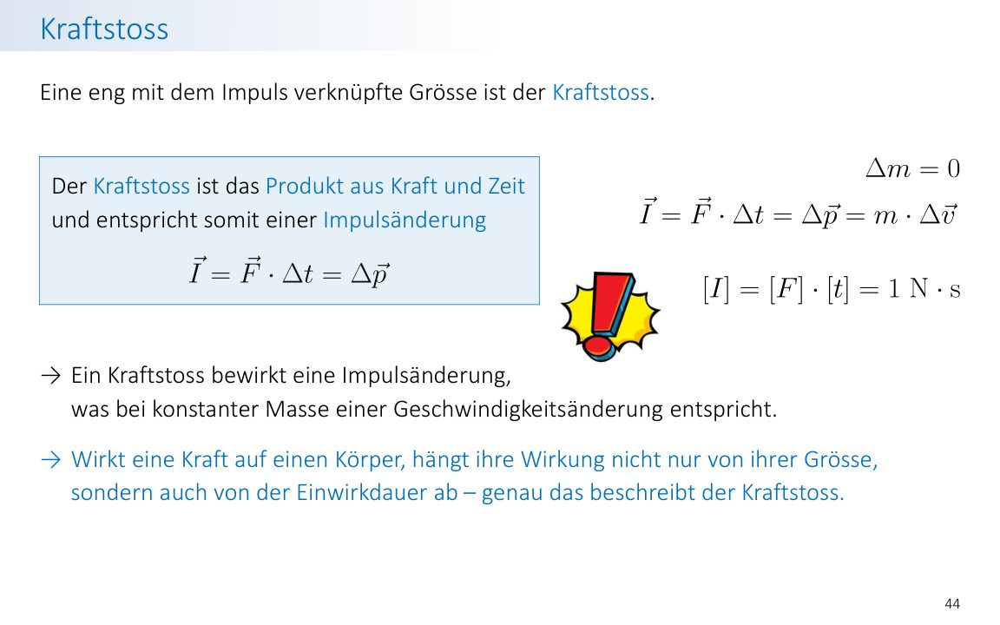
⚡ SLIDE ! L'impulsion de force = force × durée = variation d'impulsion. Conséquence sportive énorme : l'effet d'une force dépend non seulement de son intensité mais aussi de sa durée d'application. D'où l'importance de la force explosive (produire une grande variation d'impulsion en peu de temps).
Une grandeur étroitement liée à l'impulsion est l'impulsion de force.
Impulsion de force = produit de la force et du temps = variation d'impulsion.
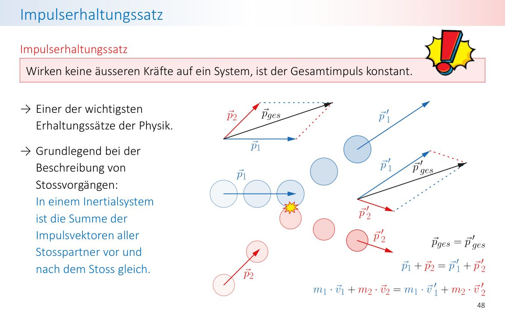
⚡ SLIDE ! Loi de conservation de l'impulsion : si aucune force extérieure n'agit sur un système, l'impulsion totale (somme des vecteurs) reste constante avant et après un choc. Un des plus importants principes de conservation de la physique, base de toute la théorie des chocs.
Énoncé : si aucune force extérieure n'agit sur un système, l'impulsion totale est constante.
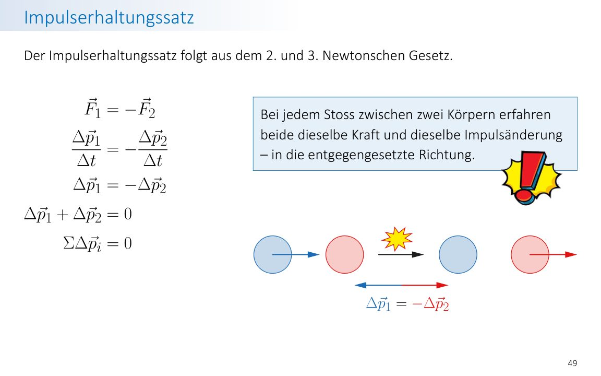
⚡ SLIDE ! La conservation de l'impulsion découle des 2e et 3e lois de Newton. Lors d'un choc, les deux corps subissent la même force et la même variation d'impulsion, en sens opposés. (Cf. exemple du golf : le club perd exactement l'impulsion que gagne la balle.)
La loi de conservation de l'impulsion découle des 2e et 3e lois de Newton.
Lors de chaque choc entre deux corps, les deux subissent la même force et la même variation d'impulsion — en sens opposés.
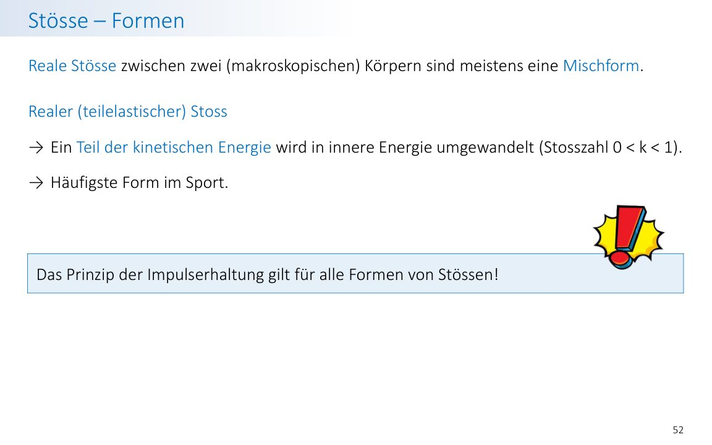
⚡ SLIDE ! Deux cas idéaux + le cas réel :
Les chocs réels entre deux corps (macroscopiques) sont le plus souvent une forme intermédiaire. Le principe de conservation de l'impulsion vaut pour toutes les formes de chocs !
Choc réel (partiellement élastique) : une partie de l'énergie cinétique est convertie en énergie interne (coefficient de restitution 0 < k < 1). → Forme la plus fréquente dans le sport.
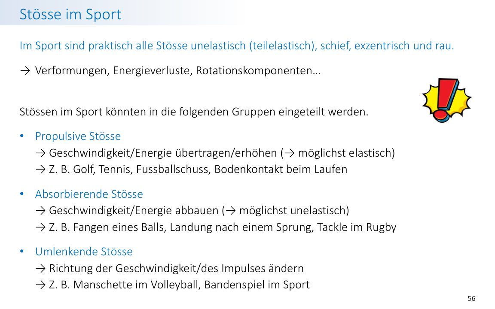
⚡ SLIDE ! Dans le sport, presque tous les chocs sont inélastiques, obliques, excentriques et rugueux. On les classe par but :
Dans le sport, presque tous les chocs sont inélastiques (partiellement élastiques), obliques, excentriques et rugueux (déformations, pertes d'énergie, composantes de rotation…). On peut les classer en :
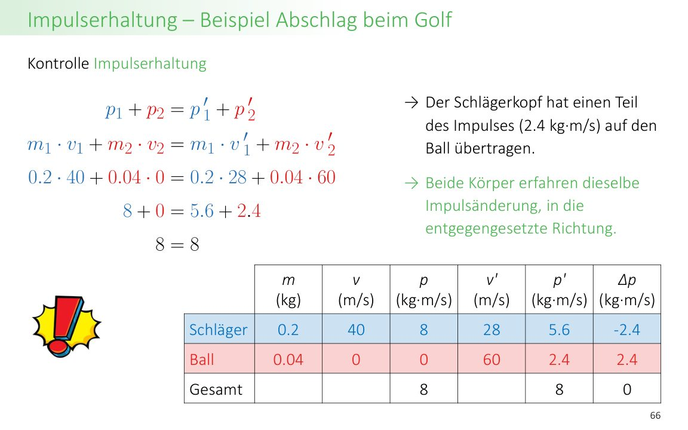
⚡ SLIDE ! Le tableau du drive de golf : le club (0,2 kg) passe de 40 à 28 m/s, la balle (0,04 kg) part à 60 m/s. Le club a cédé 2,4 kg·m/s exactement à la balle → impulsion totale conservée (8 = 8). À comprendre : même variation d'impulsion, sens opposés. (Pas besoin de refaire le calcul, juste de lire le bilan.)
Tableau de contrôle de la conservation de l'impulsion (m = masse, v = vitesse avant, p = impulsion avant, v' = vitesse après, p' = impulsion après, Δp = variation) :
→ La tête de club a transmis une partie de son impulsion (2,4 kg·m/s) à la balle. Les deux corps subissent la même variation d'impulsion, en sens opposés.
Travail = énergie transférée par une force le long d'un chemin (= aire sous la courbe force-déplacement). Énergie = travail stocké. Puissance = travail (ou énergie) par unité de temps.
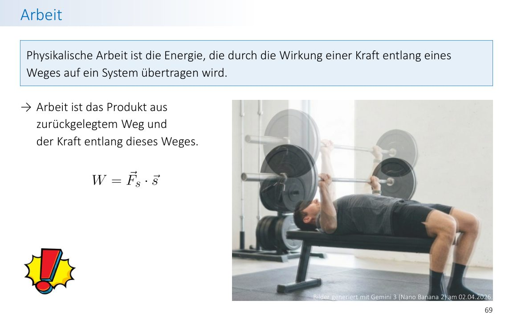
⚡ SLIDE ! Travail = force × chemin parcouru (le long de ce chemin). Le travail physique est l'énergie transférée à un système par l'action d'une force sur une distance. Seule la composante de force dans la direction du déplacement travaille.
Le travail physique est l'énergie transférée à un système par l'action d'une force le long d'un chemin.
→ Le travail = produit du chemin parcouru et de la force le long de ce chemin.
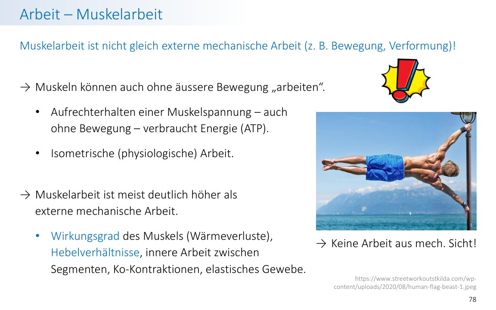
⚡ SLIDE ! Nuance importante : le travail musculaire n'est pas le travail mécanique externe. Un muscle peut « travailler » sans mouvement visible (maintien d'une tension = travail isométrique, consomme de l'ATP). Le travail musculaire est en général nettement supérieur au travail mécanique externe (rendement, leviers, co-contractions…). Ex. la planche : « pas de travail au sens mécanique », mais épuisant.
Le travail musculaire n'est pas égal au travail mécanique externe (mouvement, déformation) ! Les muscles peuvent aussi « travailler » sans mouvement extérieur.
(Ex. drapeau humain : aucun travail au sens mécanique, mais énorme effort musculaire.)
⚡ SLIDE ! L'énergie est du travail stocké, et le travail est une différence d'énergie. Travail, énergie et chaleur ont la même unité (le joule). Un travail négatif = le système restitue de l'énergie.
L'énergie est du travail stocké, et le travail est une différence d'énergie.
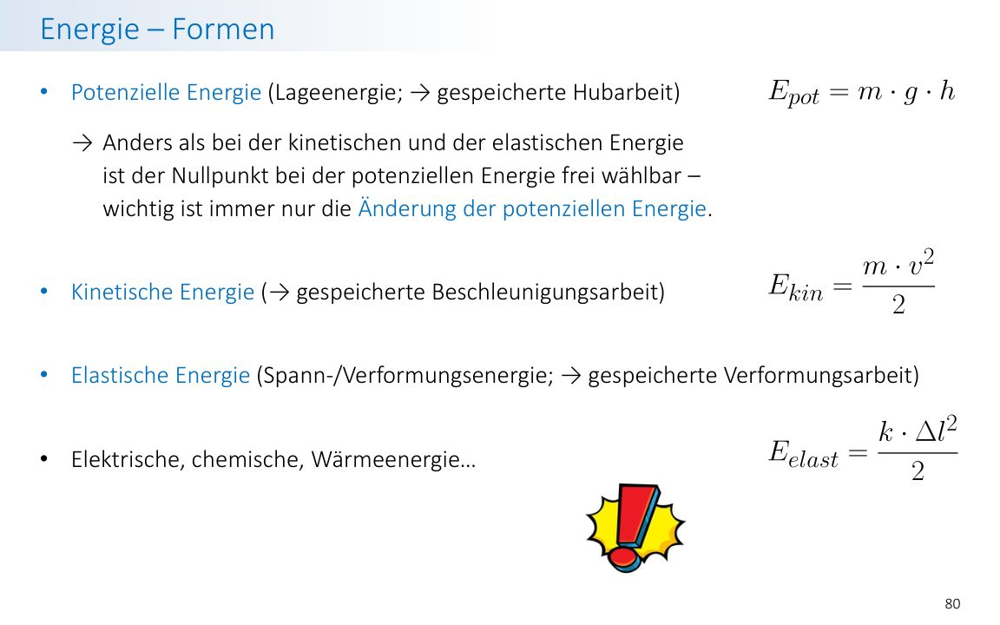
⚡ SLIDE ! Les formes mécaniques : énergie potentielle (de position ; son zéro est librement choisi, seule la variation compte), énergie cinétique (de mouvement), énergie élastique (de déformation). Plus les formes électrique/chimique/thermique.
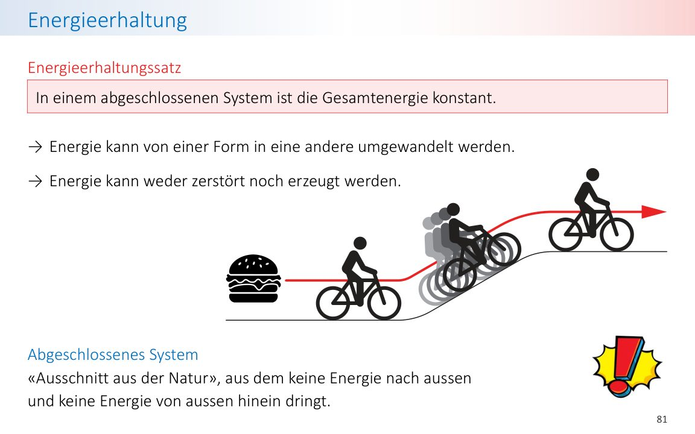
⚡ SLIDE ! Loi de conservation de l'énergie : dans un système fermé, l'énergie totale est constante. L'énergie ne se crée ni ne se détruit, elle se transforme d'une forme à l'autre. (C'est ce qui permet de résoudre des problèmes « par l'énergie » plus simplement que par la cinématique — ex. bungee, perche.)
Système fermé : « portion de la nature » dans laquelle aucune énergie ne sort ni n'entre.
Loi de conservation de l'énergie : dans un système fermé, l'énergie totale est constante.
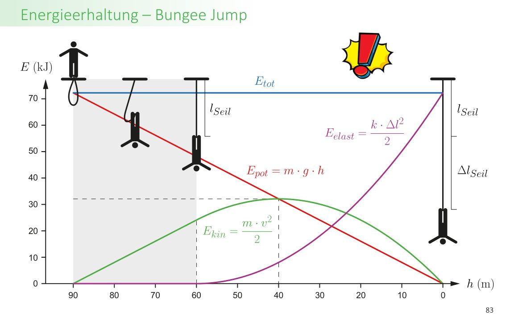
⚡ SLIDE ! Exemple d'application de la conservation de l'énergie (air et frottement négligés). Pendant le saut, trois énergies s'échangent : potentielle ↔ cinétique ↔ élastique (la corde). Au point le plus haut : tout en potentielle ; vitesse max quand la résultante des forces s'annule (poids = force élastique). À comprendre comme une conversion continue, pas comme un calcul.
Lecture du graphique (axes : E (kJ) = énergie en kilojoules ; h (m) = hauteur, qui diminue de 90 m à 0 vers la droite = la chute) :
À chaque hauteur, les trois courbes s'additionnent pour donner la ligne bleue : Epot + Ekin + Eelast = Etot = constante. La vitesse max est atteinte quand Ekin culmine, et en bas tout est stocké dans la corde (Eelast).
Vocabulaire : Seil = corde · Energieerhaltung = conservation de l'énergie.
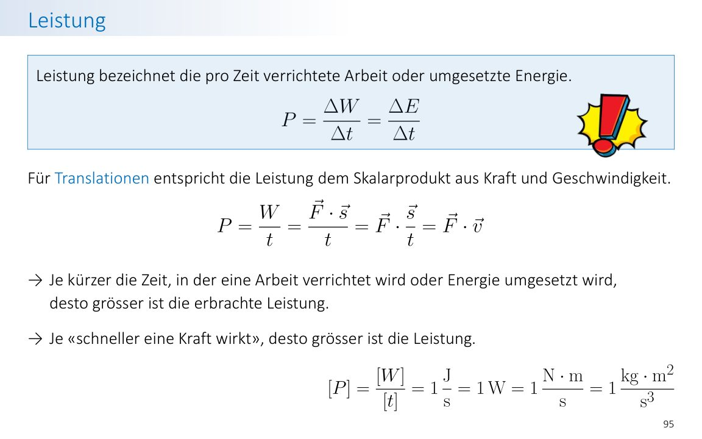
⚡ SLIDE ! Puissance = travail (ou énergie) par unité de temps. Plus le travail est fait vite, plus la puissance est grande. « Plus une force agit vite, plus la puissance est élevée. » Pour une translation : puissance = force × vitesse.
La puissance désigne le travail fourni (ou l'énergie convertie) par unité de temps.
Pour les translations, la puissance = produit scalaire de la force et de la vitesse.
L'application concrète des chapitres 3 et 4 sur deux gestes : le Countermovement Jump (saut avec contre-mouvement) et la course à pied. Peu de slides « ! » (3), mais une slide-graphique majeure, et du contexte utile à connaître.
La plateforme de force (Kraftmessplatte) est l'un des outils les plus utilisés en biomécanique (analyse de marche/course, équilibre, saut). Un capteur 3D dans chaque coin → 12 signaux → on en tire les forces de réaction du sol et les moments. Le capteur (jauge de contrainte ou piézoélectrique) transforme une déformation en signal électrique proportionnel à la force. Autres méthodes : barrière lumineuse (temps de vol), IMU, motion capture, vidéo.
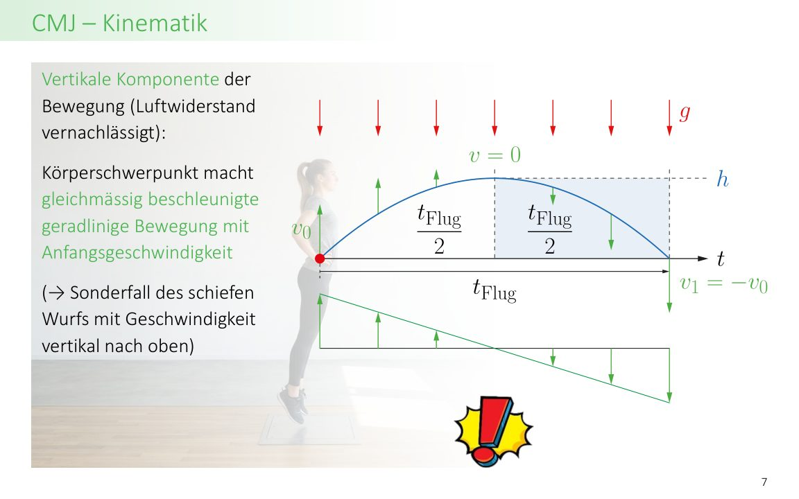
⚡ SLIDE ! Pendant la phase de vol, le centre de gravité fait un mouvement rectiligne uniformément accéléré (g vers le bas), avec une vitesse initiale vers le haut. C'est un cas particulier du tir oblique (chapitre 3) avec une vitesse purement verticale. On néglige la résistance de l'air. → La hauteur de saut se déduit donc de la vitesse d'envol ou du temps de vol.
Composante verticale du mouvement (résistance de l'air négligée) : le centre de gravité effectue un mouvement rectiligne uniformément accéléré avec une vitesse initiale. → C'est un cas particulier du tir oblique, avec une vitesse dirigée verticalement vers le haut.
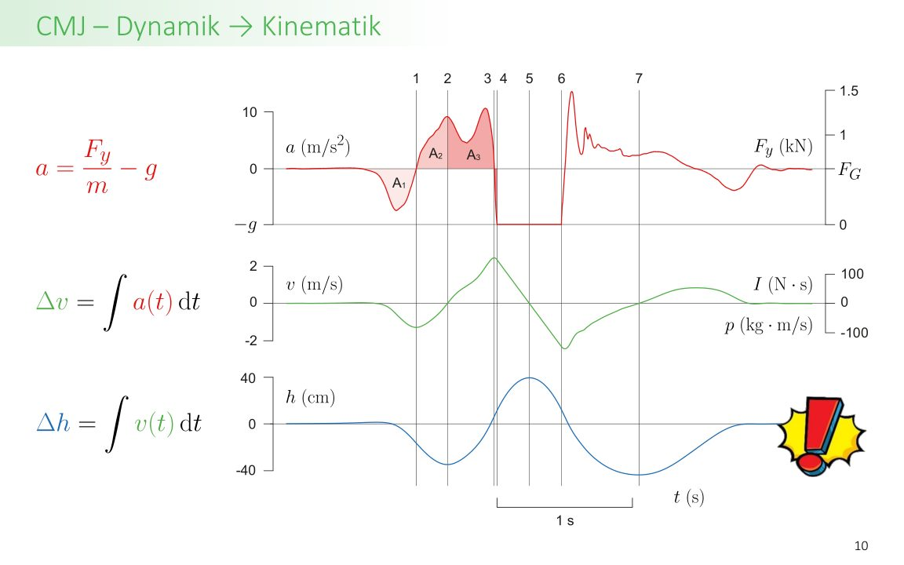
⚡ SLIDE ! Le graphique-phare du chapitre. Trois courbes empilées et synchronisées, lues de haut en bas :
Message clé : on part de la force mesurée (dynamique) et, par double intégration, on remonte à la vitesse puis à la position (cinématique). Exactement la logique « aire sous la courbe » du chapitre 3, appliquée à un vrai saut. Sache identifier chaque phase sur la courbe.
Slide-graphique majeur. Trois courbes synchronisées (de haut en bas) :
Message : on part de la force mesurée et, par double intégration, on remonte à la vitesse puis à la hauteur.
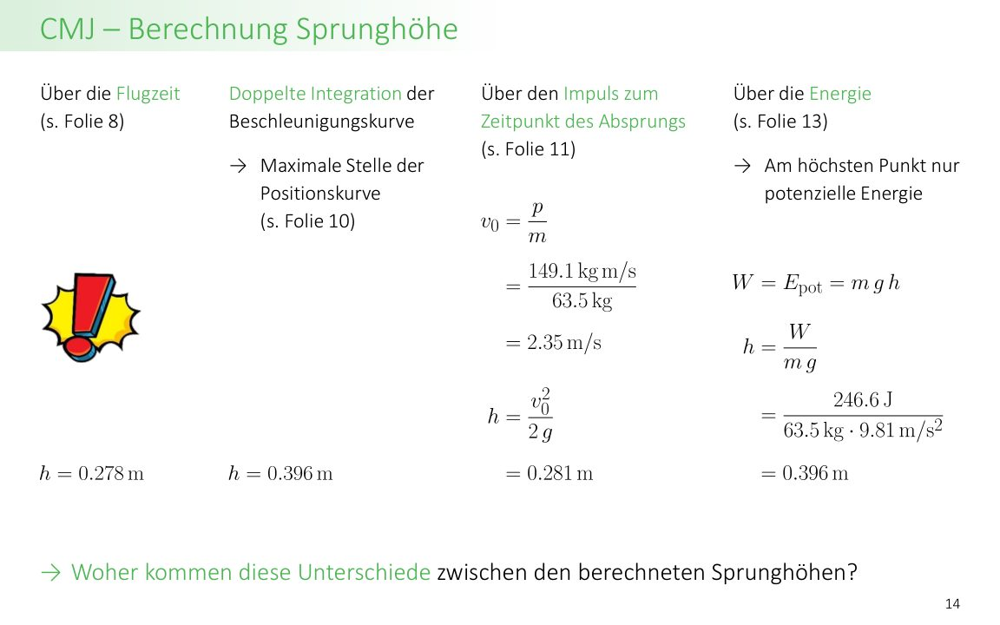
⚡ SLIDE ! Quatre méthodes pour obtenir la hauteur de saut, toutes vues dans le cours : (1) via le temps de vol, (2) par double intégration de la courbe d'accélération (point max de la position), (3) via l'impulsion à l'instant du décollage, (4) via l'énergie (au sommet, tout est énergie potentielle). À retenir : ces méthodes donnent de petites différences (selon les hypothèses et erreurs de mesure) — d'où la question « pourquoi ces écarts ? ».
Quatre méthodes pour obtenir la hauteur de saut :
→ Question posée : d'où viennent les différences entre les hauteurs calculées par ces méthodes ? (hypothèses et erreurs de mesure)
Réception = choc parfaitement inélastique avec le sol. On ne peut réduire la force de freinage qu'en allongeant le temps de freinage (amortir, plier les genoux, semelles, tapis). C'est l'impulsion de force du chapitre 4 : même variation d'impulsion, mais étalée → force plus faible.
Le « paradoxe du travail nul » (zero work paradox) : courir à vitesse constante sur le plat, le travail mécanique externe net = 0 (ni l'énergie cinétique ni potentielle ne changent durablement)… et pourtant ça coûte de l'énergie métabolique. Pourquoi ? Le centre de gravité est freiné puis ré-accéléré à chaque appui, les muscles ne sont pas des ressorts parfaits (~50 % de restitution élastique), freiner coûte aussi du travail, le rendement musculaire est bas (~25 %), plus le travail interne des segments.
Paramètres spatio-temporels de la course : vitesse = longueur de foulée × fréquence de foulée. Mesurables par systèmes optiques (OptoGait). Distinction de vocabulaire : « spatio-temporal » = global/événementiel (paramètres de foulée) ; « kinematic » = spécifique aux segments/articulations (angles articulaires).
Motion capture & dynamique inverse : le motion capture (marqueurs réfléchissants + caméras, triangulation) donne très précisément la cinématique. Les forces et moments articulaires, eux, ne se mesurent pas directement → on les estime par dynamique inverse (le corps modélisé en segments rigides reliés par des articulations). Un modèle reste une simplification de la réalité reposant sur des hypothèses. Les montres (Garmin) estiment l'énergie avec 10-20 % d'écart vs labo (gold standard = calorimétrie indirecte).
Le pendant du chapitre 4, mais pour les rotations. Toute la mécanique se « traduit » : masse→moment d'inertie, force→moment de force, impulsion→moment cinétique. Chapitre dense en slides « ! » (16) — c'est dire son importance.
Rotation : tous les points du corps décrivent des cercles à distance fixe autour d'un axe de rotation. En rotation pure, le corps change d'orientation mais pas de position. Tous les points ont la même vitesse angulaire, mais des vitesses tangentielles différentes (selon la distance à l'axe).
À garder en tête en permanence pour ce chapitre :
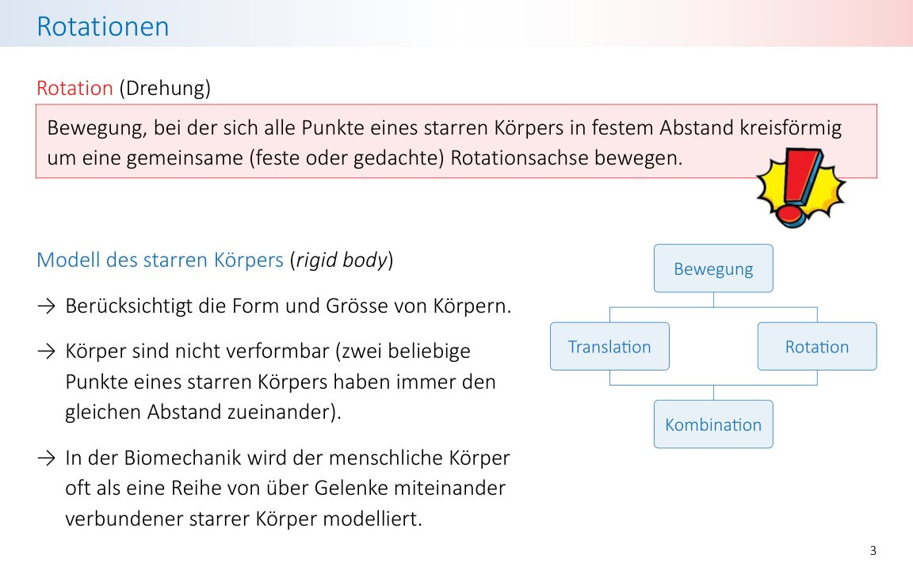
⚡ SLIDE ! Définition de la rotation + modèle du corps rigide : un corps non déformable (la distance entre deux points reste constante). En biomécanique, le corps humain est modélisé comme une chaîne de corps rigides reliés par des articulations.
Rotation (tour) : mouvement où tous les points d'un corps rigide se déplacent en cercle, à distance fixe, autour d'un axe de rotation commun (fixe ou imaginaire).
Modèle du corps rigide : tient compte de la forme et de la taille des corps ; les corps ne sont pas déformables (deux points quelconques gardent toujours la même distance). En biomécanique, le corps humain est souvent modélisé comme une suite de corps rigides reliés par des articulations.
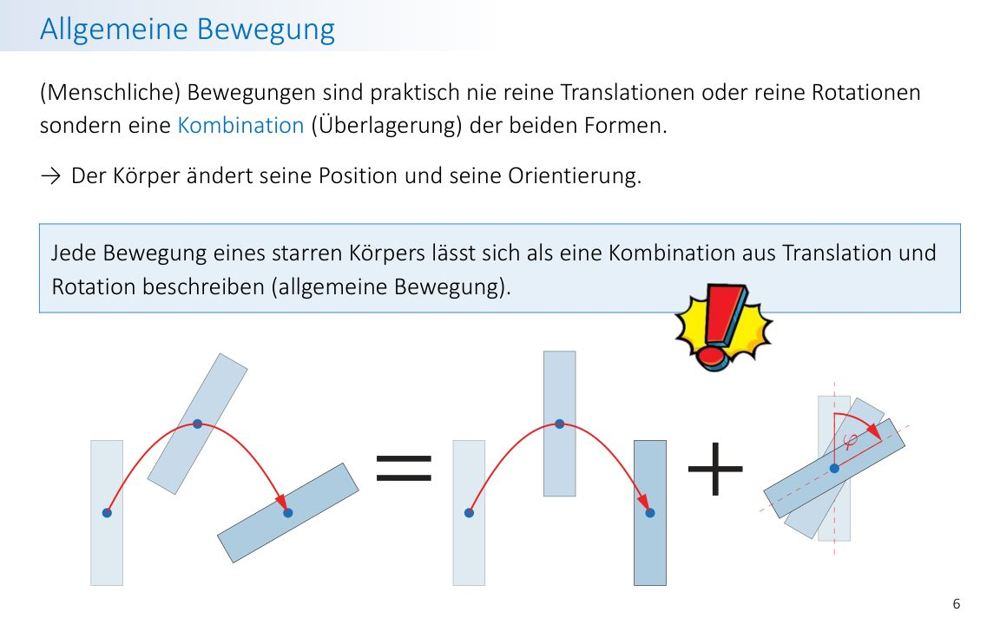
⚡ SLIDE ! Rappel essentiel : les mouvements humains ne sont presque jamais des translations ou rotations pures, mais une combinaison (superposition) des deux = mouvement général. Le corps change alors à la fois de position et d'orientation.
Les mouvements (humains) ne sont presque jamais de pures translations ou de pures rotations, mais une combinaison (superposition) des deux. → Le corps change à la fois de position et d'orientation.
Tout mouvement d'un corps rigide peut se décrire comme une combinaison de translation et de rotation (= mouvement général).
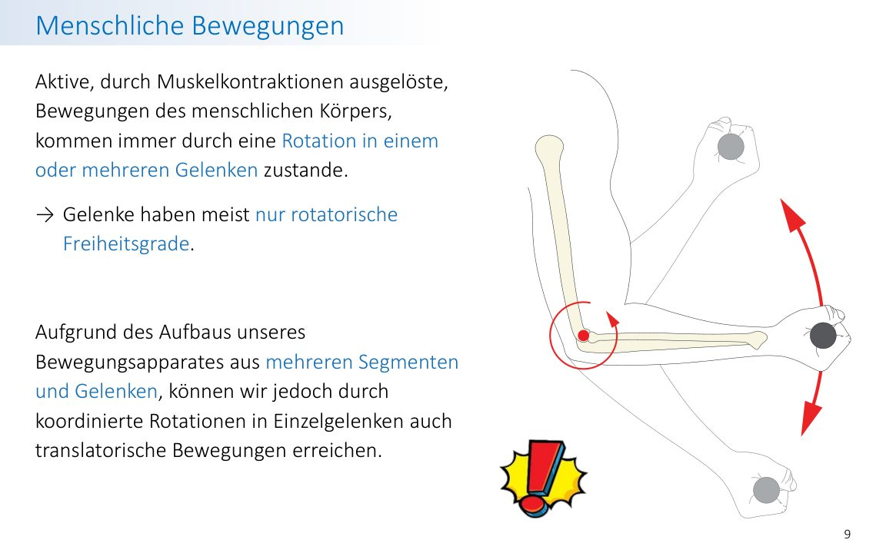
⚡ SLIDE ! Idée centrale : tout mouvement humain actif (par contraction musculaire) naît d'une rotation dans une ou plusieurs articulations. Les articulations n'ont quasi que des degrés de liberté en rotation. Mais en coordonnant ces rotations (chaîne de segments), on produit aussi des translations (ex. le bassin qui monte/descend).
Les mouvements actifs du corps humain, déclenchés par les contractions musculaires, naissent toujours d'une rotation dans une ou plusieurs articulations. → Les articulations n'ont en général que des degrés de liberté en rotation.
Grâce à la structure de notre appareil locomoteur (plusieurs segments et articulations), on peut toutefois obtenir des mouvements de translation par des rotations coordonnées dans les différentes articulations.
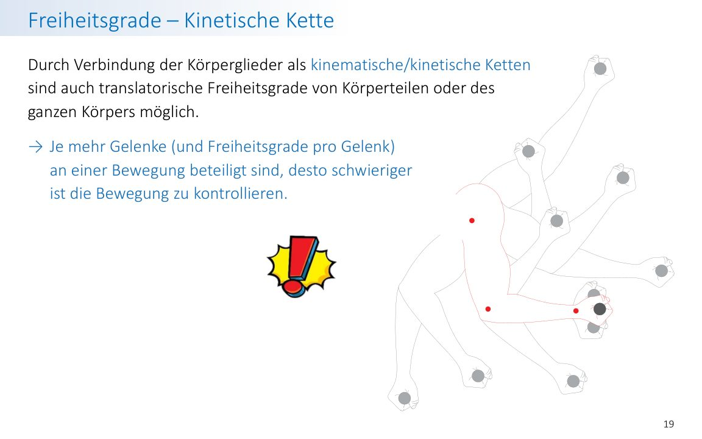
⚡ SLIDE ! En reliant les segments en chaînes cinématiques, on obtient des degrés de liberté en translation pour le corps entier. Conséquence : plus il y a d'articulations (et de degrés de liberté) impliquées, plus le mouvement est difficile à contrôler. (Rappel : corps rigide en 2D = 3 degrés de liberté, en 3D = 6.)
En reliant les membres du corps en chaînes cinématiques/cinétiques, des degrés de liberté en translation deviennent possibles pour des parties du corps ou le corps entier.
→ Plus il y a d'articulations (et de degrés de liberté par articulation) impliquées dans un mouvement, plus celui-ci est difficile à contrôler.
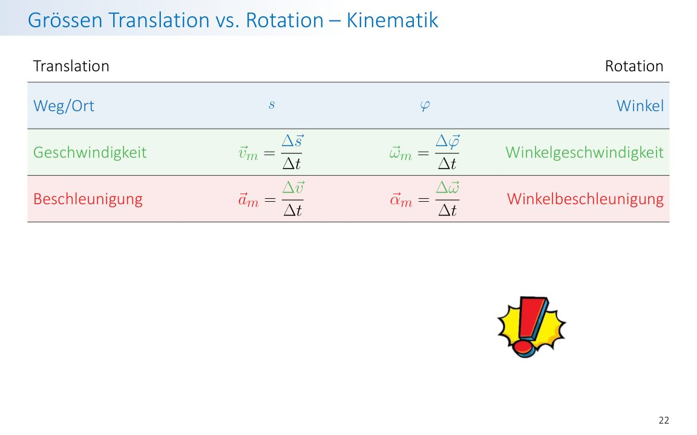
⚡ SLIDE ! Le tableau de traduction cinématique : chemin↔angle, vitesse↔vitesse angulaire, accélération↔accélération angulaire. Comprendre l'analogie suffit (les angles s'expriment en radians dans les formules, mais aucun calcul n'est demandé).
Tableau de correspondance :
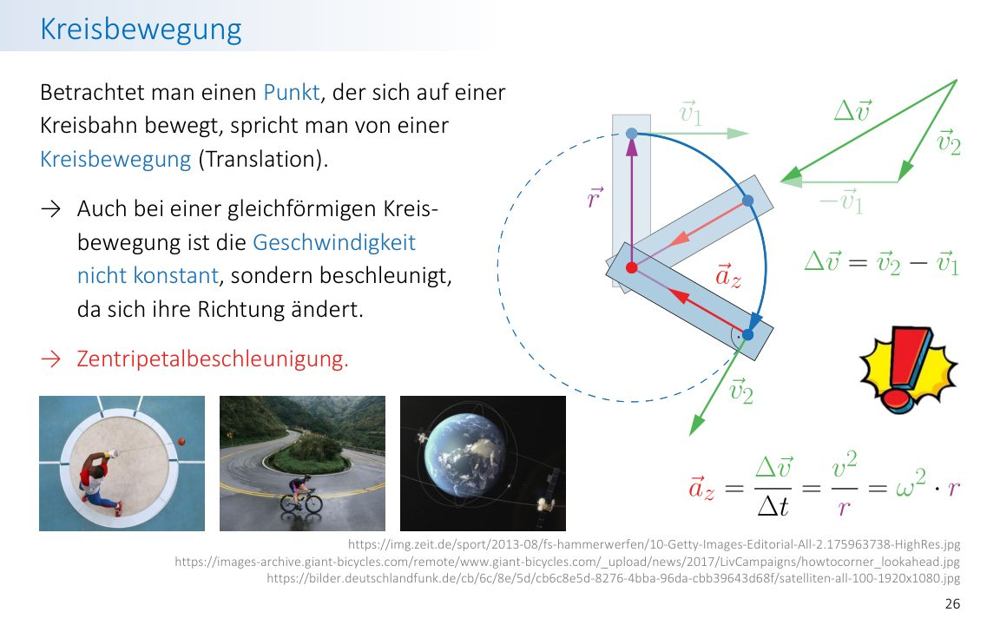
⚡ SLIDE ! Point contre-intuitif à savoir absolument : même dans un mouvement circulaire uniforme (vitesse constante en valeur), la vitesse est quand même accélérée car sa direction change en permanence. Cette accélération pointe vers le centre → accélération centripète.
Quand on considère un point qui se déplace sur une trajectoire circulaire, on parle de mouvement circulaire (translation).
→ Même dans un mouvement circulaire uniforme, la vitesse n'est pas constante mais accélérée, car sa direction change. → C'est l'accélération centripète.
⚡ SLIDE ! La force centripète est celle qui fournit l'accélération centripète : elle « retient » le corps sur sa trajectoire circulaire et pointe vers le centre. Si elle disparaît, le corps repart en ligne droite tangentielle (loi d'inertie). Ex. le marteau lâché par le lanceur.
La force qui fournit l'accélération centripète nécessaire dans un mouvement circulaire s'appelle la force centripète.
⚡ SLIDE ! La force centrifuge (« force de fuite ») est une force fictive / d'inertie qui n'existe que dans un référentiel en rotation. Dirigée radialement vers l'extérieur. À vitesse angulaire constante, elle est égale et opposée à la centripète (équilibre dynamique). Bien comprendre : centripète = vraie force, centrifuge = effet d'inertie ressenti dans le référentiel tournant.
Sur tout corps situé dans un référentiel en rotation (accéléré) agit toujours une force centrifuge dirigée à l'opposé du centre de rotation.
⚡ SLIDE ! Le grand tableau de correspondance dynamique : masse→moment d'inertie, force→moment de force, impulsion→moment cinétique, énergie cinétique→énergie de rotation. La pièce maîtresse du chapitre : tout ce que tu sais en translation a son équivalent en rotation.
Tableau de correspondance :
⚡ SLIDE ! Une rotation apparaît quand la ligne d'action d'une force ne passe pas par le centre de masse → il se crée un moment de force (Drehmoment). Le moment est à la rotation ce que la force est à la translation : sa cause. (Moment = force × bras de levier, c.-à-d. distance perpendiculaire entre la ligne d'action et l'axe.)
Une rotation apparaît quand la ligne d'action d'une force ne passe pas par le centre de masse / point de rotation du corps. → Il se crée un moment de force (Drehmoment).
→ De façon analogue à la force pour les translations, le moment de force est la cause des rotations.
⚡ SLIDE ! Les moments dans les articulations sont la cause de tout mouvement actif ; ils viennent des forces musculaires agissant sur le système de leviers du squelette. Deux points clés : la force ET le bras de levier dépendent de l'angle articulaire ; et le corps humain a souvent des rapports de levier défavorables (ex. le tendon d'Achille subit 3 à 3,5 × le poids du corps en courant).
Les moments dans les articulations sont la cause de tout mouvement actif. Ils naissent des forces musculaires qui agissent sur le système de leviers formé par le squelette.
(Citation : la force max du tendon d'Achille atteint 2,7× le poids du corps à la marche et 3,2–3,5× à la course.)
⚡ SLIDE ! Un moment de force provoque une accélération angulaire autour de l'axe. Celle-ci est proportionnelle au moment et inversement proportionnelle au moment d'inertie — exactement l'analogue de F = m·a en rotation. L'accélération angulaire se fait dans la direction du moment.
Un moment de force provoque une accélération angulaire du corps autour de l'axe de rotation.
⚡ SLIDE ! Le moment d'inertie = résistance d'un corps au changement de sa vitesse angulaire (l'analogue de la masse). Il dépend de la répartition de la masse par rapport à l'axe : plus la masse est éloignée de l'axe, plus le moment d'inertie est grand. (D'où le patineur qui ramène les bras pour tourner plus vite.)
Le moment d'inertie = inertie d'un corps vis-à-vis du changement de sa vitesse angulaire (analogue de la masse pour les translations). C'est une mesure de la résistance au changement d'une rotation autour d'un axe donné.
Il dépend de la répartition de la masse par rapport à l'axe : plus la masse est éloignée de l'axe, plus le moment d'inertie est grand.
⚡ SLIDE ! Un même corps a des moments d'inertie différents selon l'axe autour duquel il tourne. En gymnastique, le corps tourne plus facilement autour de certains axes que d'autres (groupé vs tendu). À comprendre visuellement.
Le moment d'inertie d'un corps dépend donc de l'axe de rotation.
→ Un seul et même corps a des moments d'inertie différents selon l'axe autour duquel il tourne. (Illustré en gymnastique : groupé vs tendu.)
⚡ SLIDE ! Le moment cinétique (Drehimpuls) décrit l'état de rotation, comme l'impulsion pour la translation : = moment d'inertie × vitesse angulaire. Un moment de force appliqué pendant un certain temps produit une variation de moment cinétique (l'analogue de l'impulsion de force).
Le moment cinétique décrit, de façon analogue à l'impulsion pour les translations, l'état de mouvement d'un corps en rotation.
Le moment cinétique = produit du moment d'inertie et de la vitesse angulaire. Il est relié, via le rayon, à l'impulsion « tangentielle ».
⚡ SLIDE ! Loi de conservation du moment cinétique : sans moment de force extérieur, le moment cinétique total reste constant. La différence cruciale avec la translation : contrairement à la masse, on peut modifier volontairement son moment d'inertie pendant le mouvement (écarter/ramener les bras). Conséquence : augmenter le moment d'inertie → ralentir la rotation, et inversement. C'est le principe du patineur en pirouette (bras serrés = tourne vite). Slide classique d'examen.
Énoncé : si aucun moment de force extérieur n'agit sur un système, le moment cinétique total (somme vectorielle de tous les moments cinétiques) est constant. (Principe de la pirouette du patineur.)
Chapitre d'application qui réunit tout : forces, puissance, frottement, rotation, transmission. Avantage du vélo : la puissance et les forces sont faciles à mesurer directement (jauges de contrainte sur les pédales), contrairement à la course.
La vitesse d'un cycliste résulte de l'équilibre entre la force motrice et les forces qui s'y opposent : résistance de l'air (la principale à vitesse élevée), résistance au roulement (frottement), poids (composante le long de la pente), plus les forces en virage. Pour rouler à vitesse constante, la puissance du cycliste doit exactement égaler la somme des « puissances de résistance ».
⚡ SLIDE ! Le principe central du chapitre : rouler à vitesse constante = puissance fournie égale à la somme de toutes les puissances de résistance (air + roulement + pente). Si tu pousses plus que les résistances → tu accélères ; moins → tu ralentis. C'est l'application directe de la notion de puissance (ch. 4) au vélo.
Pour rouler à vitesse constante, la puissance d'un cycliste doit être exactement égale à la somme de toutes les « puissances de résistance ».
Traduction de la formule centrale : PFahrer = PSteig + PLuft + PRoll, c'est-à-dire :
Sur le dessin du vélo : FG = m·g = le poids (flèche rouge verticale) ; FHang = FG·sin(α) = la composante du poids le long de la pente ; v = la vitesse le long de la route ; vvert = sin(α)·v = la composante verticale de la vitesse ; α = l'angle de la pente.
⚡ SLIDE ! Graphique à comprendre. La résistance de l'air augmente avec le carré de la vitesse, et la puissance nécessaire pour la vaincre avec le cube de la vitesse → la courbe explose vers le haut. Concrètement : doubler la vitesse exige bien plus que doubler la puissance. C'est pourquoi à haute vitesse, presque toute l'énergie part dans l'air (et pourquoi l'aérodynamisme est roi en cyclisme).
Lecture du graphique (axes : P (W) = puissance en watts ; v (km/h) = vitesse) :
Les repères clés : à 16,5 km/h, air et roulement se valent ; à ~33 km/h, l'air représente déjà 80 % de la résistance totale et le roulement seulement 20 %. Conclusion : plus on va vite, plus l'aérodynamisme domine tout — d'où position aéro, casques profilés et aspiration.
Effet de l'aspiration (Windschatten) — bon à connaître, illustré par un tableau frappant : un coureur seul dépense ~163 W ; en tête de peloton ~144 W ; mais caché dans le peloton, seulement ~37 W ! L'abri aérodynamique fait économiser une énergie énorme.
⚡ SLIDE ! Un cycliste doit s'incliner pour tenir un virage de façon stable. Vu de son référentiel en rotation, le cycliste est « au repos » : la force centrifuge (fictive) le pousse vers l'extérieur, et l'inclinaison permet à la résultante (poids + réaction du sol) de rester alignée pour ne pas basculer. Application directe des forces centripète/centrifuge du chapitre 6.
Un cycliste a besoin d'une inclinaison (Schräglage) pour rouler de façon stable dans un virage.
→ Dans le référentiel en rotation, le cycliste est « au repos » : l'inclinaison équilibre la force centrifuge (fictive) pour éviter de basculer.
⚡ SLIDE ! Pour ne pas glisser latéralement en virage, la somme de toutes les forces doit être nulle : c'est la force de frottement (adhérence pneu-sol) qui fournit la force centripète nécessaire. Si le frottement est insuffisant (sol mouillé, trop de vitesse) → dérapage. Le dévers (relèvement de la piste) aide en réorientant la force normale vers le centre. Boucle bouclée avec le chapitre 4 (frottement) et le chapitre 6 (rotation).
Pour ne pas glisser latéralement dans le virage, la somme de toutes les forces doit aussi être nulle.
→ C'est la force de frottement (adhérence pneu-sol) qui fournit la force centripète nécessaire. Le dévers (Überhöhung, relèvement de la piste) aide en réorientant la force normale vers le centre.
Transmission & règle d'or (hors « ! » mais utile) : « ce qu'on économise en force, on le paie en chemin » (Galilée). Petit braquet = moins de force mais plus de cadence. Le rapport de transmission (ex. 34/21 ≈ 1,6) relie un tour de pédalier à 1,6 tour de roue arrière. La roue qui roule = translation de l'axe + rotation autour de l'axe ; le point de contact au sol a une vitesse nulle par rapport au sol → c'est là qu'agit la force d'adhérence qui permet d'accélérer.
Les réflexes qui rapportent des points, condensés.